Kamen
Tradicionalni građevinski materijal, u većim ili manjim komadima različitog stupnja obrade – za zidanje, oblaganje i popločavanje.
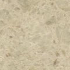

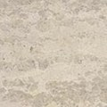

Obiteljska tradicija i iskustvo u obradi kamena i granita. Vlastitim kapacitetima režemo blokove, obrađujemo i montiramo sve vrste kamena – na širem dalmatinskom području i diljem Hrvatske.

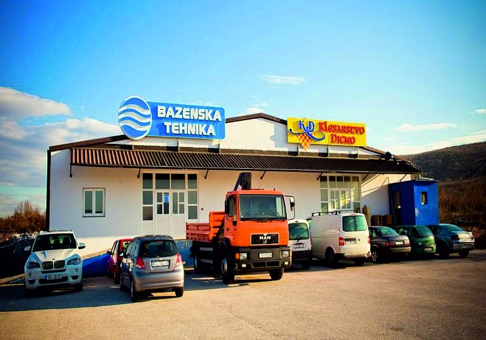
Klesarstvo Dicmo tvrtka je s dugogodišnjom obiteljskom tradicijom i iskustvom u obradi kamena i granita.
Osim radova na širem dalmatinskom području, poslovanje smo proširili na prostor cijele Hrvatske. Koristimo suvremenu tehnologiju s vlastitim kapacitetima za rezanje blokova te obradu i montažu svih vrsta kamena. Upoznajte nas osobno – posjetite naš pogon u Dicmu.
„Kvalitetom do uspjeha.”Moto s našeg znaka
Preradom i obradom mramora, granita i kamena izrađujemo sve od nadgrobnih spomenika do kuhinjskih ploča i kamena za bazene.
Materijale uvozimo izravno od provjerenih dobavljača. Budući da imamo kompletnu proizvodnju, možemo jamčiti za kvalitetu izrade – ručne i strojne.
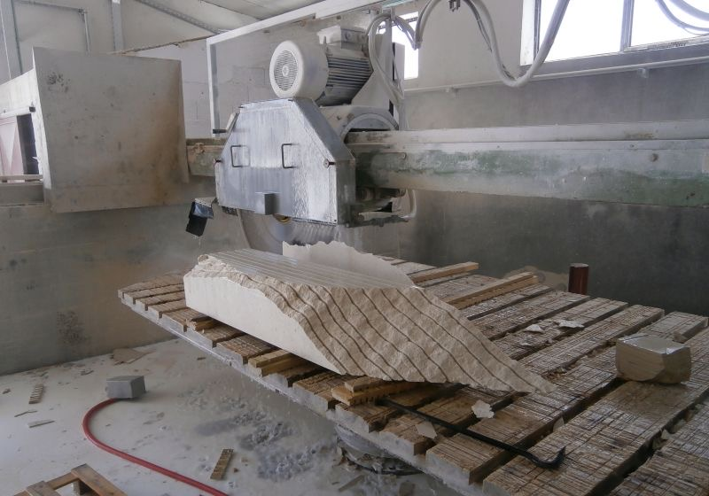
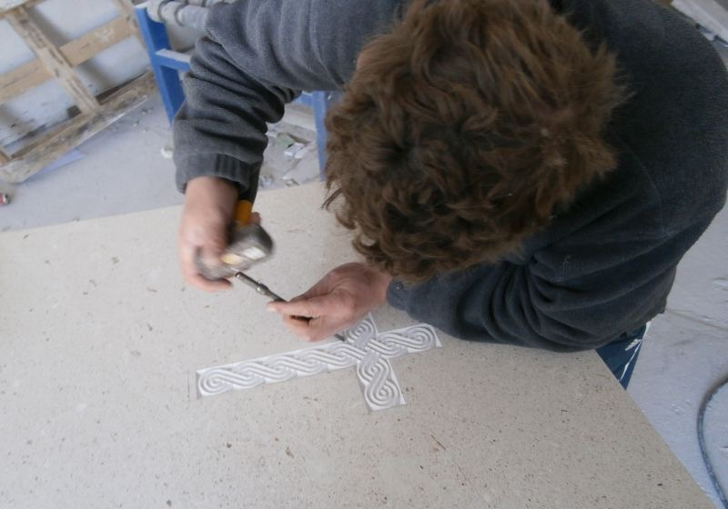
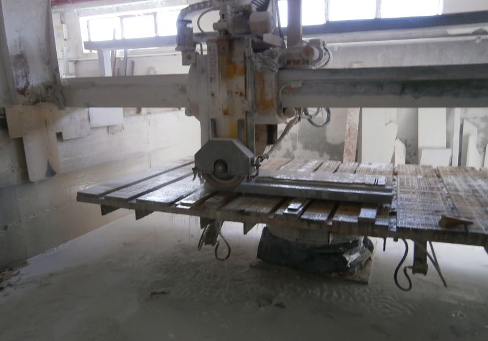
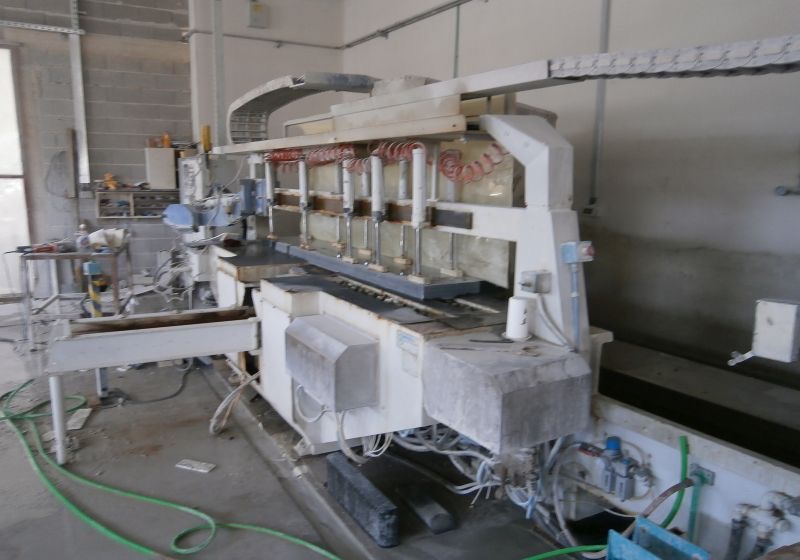
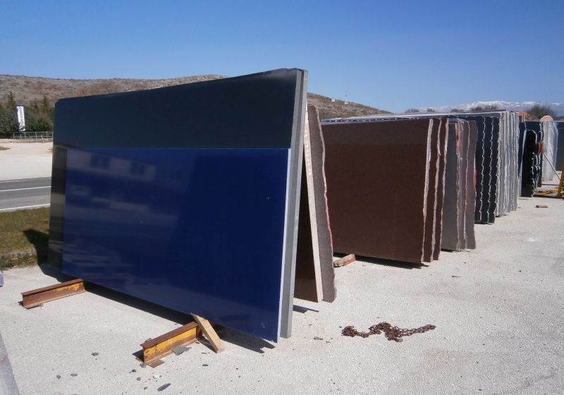
Tradicionalni građevinski materijal, u većim ili manjim komadima različitog stupnja obrade – za zidanje, oblaganje i popločavanje.


Otporan, tvrd kamen zrnate strukture: ne boji se grebanja, visoke temperature, prljanja ni kiselina. Za podove, stepenice, fasade, radne ploče i spomenike.


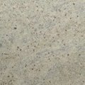
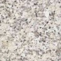
Prirodni kamen jedinstvene ljepote, mekši od granita – za stupove, skulpture, reljefe, obloge kamina, kupaonice i umivaonike.

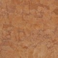

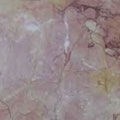
Izrađujemo grobnice i spomenike od granita, mramora i kamena. Modele možete pregledati u našem katalogu grobnica, a materijal birate iz više od stotinu vrsta.
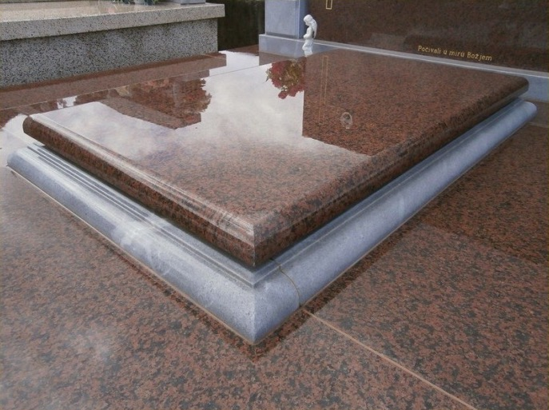

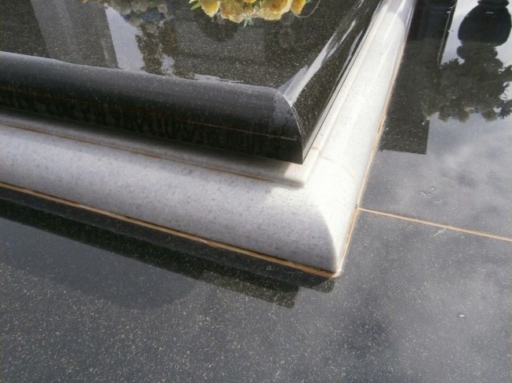

Kamen, granit i mramor – ukupno više od 100 vrsta granita i mramora. Materijale uvozimo izravno od provjerenih dobavljača. Pregled uzoraka nalazi se na stranici Materijali.
Na širem dalmatinskom području, a poslovanje smo proširili na cijelu Hrvatsku. Naš pogon je u Dicmu, Kraj 68.
Granit je otporan na grebanje, visoku temperaturu, prljanje i kiseline, pa se često koristi za radne površine i pultove. Mramor je zbog slabije otpornosti na kiseline i podložnosti grebanju zahtjevniji za održavanje i ne preporučuje se za kuhinjske radne plohe niti za vanjske podove na frekventnim mjestima.
Ne u potpunosti: slike uzoraka materijala nisu i ne mogu biti vjerodostojne prirodnom uzorku. Kamen je najbolje pogledati uživo, u našem pogonu u Dicmu.
Pregledajte naš katalog grobnica (PDF) i zapišite oznaku modela koji vam se sviđa. Zatim nas nazovite ili posjetite u pogonu u Dicmu pa ćemo zajedno odabrati materijal.
Rado ćemo odgovoriti na svaki vaš zahtjev – i rokovima i kvalitetom usluge.